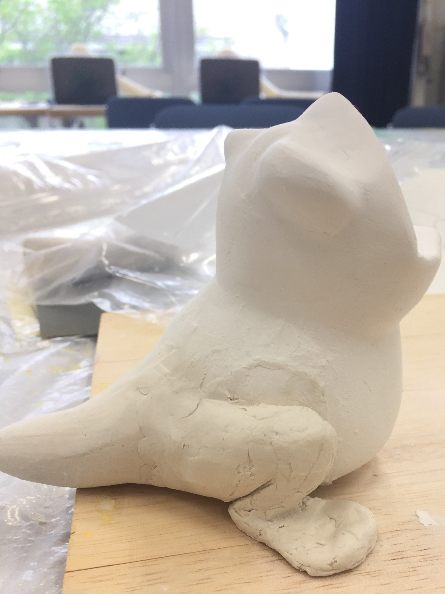

Flog Monster
イラストレーション実習フィギュア作成の課題作品で作成しました。
2 年生の授業でしたが、面白そうだったので 2 年生に混ざって授業を受けました。
初めてフィギュアを作りましたがイメージが形になっていくのがとても楽しくて、
仕上げの写真撮影まで終始楽しみながら制作出来ました。
写真のテーマとして、未知の生物を発見した風に撮影しました。
目でも楽しめ、シンプルで分かりやすい直観操作がデザインコンセプトです。
制作期間：2ヶ月 撮影機材：KISS 9X iPhone ６s キーワード 蛙×怪獣


制作過程
アルミホイルを丸め、その周りに石粉粘土をつけて大体の形を作っていきます。
細かいところは彫刻刀で彫り、表面はやすりで削ります。
目のイラストは自分で描き、半球の UV レジンと合わせてリアルに仕上げました。
体の表面も爬虫類特有の湿った感じを出すため
UV レジンでコーティングし、こだわって作成しました。
ラフイラスト
制作前のラフイラストです。
口を閉じているときは可愛く、開けると気持ち悪いのをイメージして描きました。